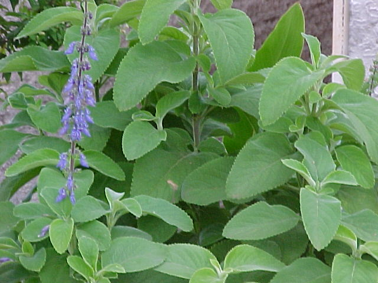

🍀 Boldo-de-jardim (Plectranthus barbatus Andrews)
Visualização 3D
Carregando modelo 3D...
Iniciando...
Gire o modelo com o mouse e use a rodinha para zoom
Sinônimos
- Plectranthus forskohlii Briq
- Coleus barbatus (Andr.) Benth.
- Boldo-nacional
- Falso-boldo
- Malva-santa
- Sete-dores
- Tapete-de-Oxalá
Descrição da Planta
- Arbusto perene de vida longa
- Altura: 1,0m a 1,5m
- Folhas opostas, pilosas e ovado-oblongas
- Inflorescência em racemo com flores azuladas pentâmeras
- Aroma característico
- Parte mais utilizada: folhas
Para Que Serve
- Usos tradicionais:
- Problemas digestivos (gastrite, azia, má digestão)
- Distúrbios hepáticos e ressaca
- Doenças respiratórias
- Problemas cardíacos
- Atividades comprovadas:
- Hepatoprotetora
- Antiespasmódica
- Anti-inflamatória
- Hipotensora
Como Usar
Infusão (chá)
- Colocar folhas frescas ou secas em xícara
- Adicionar água fervente (não ferver as folhas)
- Abafar por 20 minutos
- Coe e beba imediatamente
Tintura
Preparada com folhas secas em álcool
Alcoolatura
- Folhas frescas picadas em álcool
- Macerar por 20 dias
- Filtrar em papel de filtro
Cuidados e Contraindicações
- Evitar uso em:
- Grávidas e lactantes
- Crianças
- Pessoas com pedras na vesícula
- Hipertensos
- Interações medicamentosas:
- Anti-hipertensivos
- Depressores do SNC
- Metronidazol e dissulfiram
- Efeitos adversos:
- Irritação gástrica em doses altas
- Não usar prolongadamente sem intervalos
Cultivo
- Clima ideal: Tropical
- Época de plantio: Período chuvoso
- Solo: Ácido, com composto orgânico
- Propagação: Principalmente por estacas (raro por sementes)
- Usos agrícolas:
- Cerca viva
- Controle de erosão
- Melhorador de solo
Curiosidades
- Usado na alimentação de ovelhas, cabras e gado na Quênia e Iêmen
- Ajuda no amadurecimento de bananas
- Contém forskolin, composto com múltiplas ações farmacológicas
- Usado na medicina ayurvédica há séculos
- Na África, usado para tratar "doenças espirituais"
- Seus glicolipídeos são usados para fazer adubo